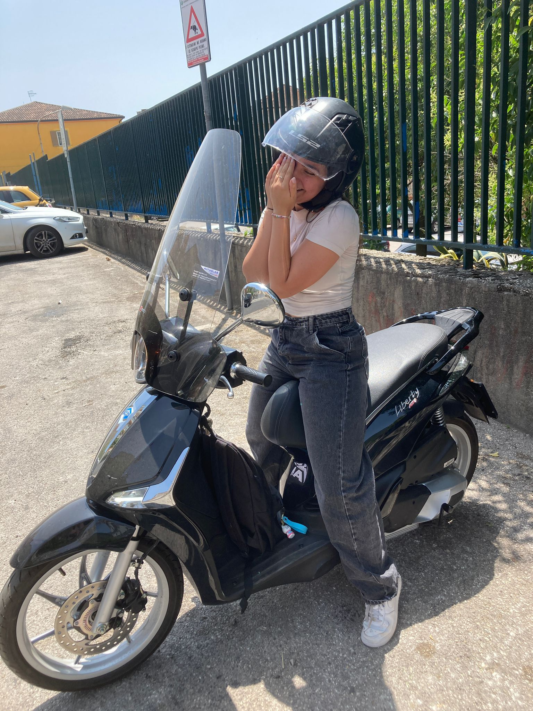

TANTI AUGURII, IOLANDAAA!
FOZZA NAPOLII E TANTI AUGURI
üéâ Buon Compleanno! üéâ
ü•≥ Che tutti i tuoi desideri si avverino! ü•≥
✨ Un giorno speciale per una persona speciale! ✨
Il tuo browser non supporta il tag video.
Da parte del tuo amicone
GUARNIEROENRICOO❤️
scorri anche giu ‚Üì‚Üì